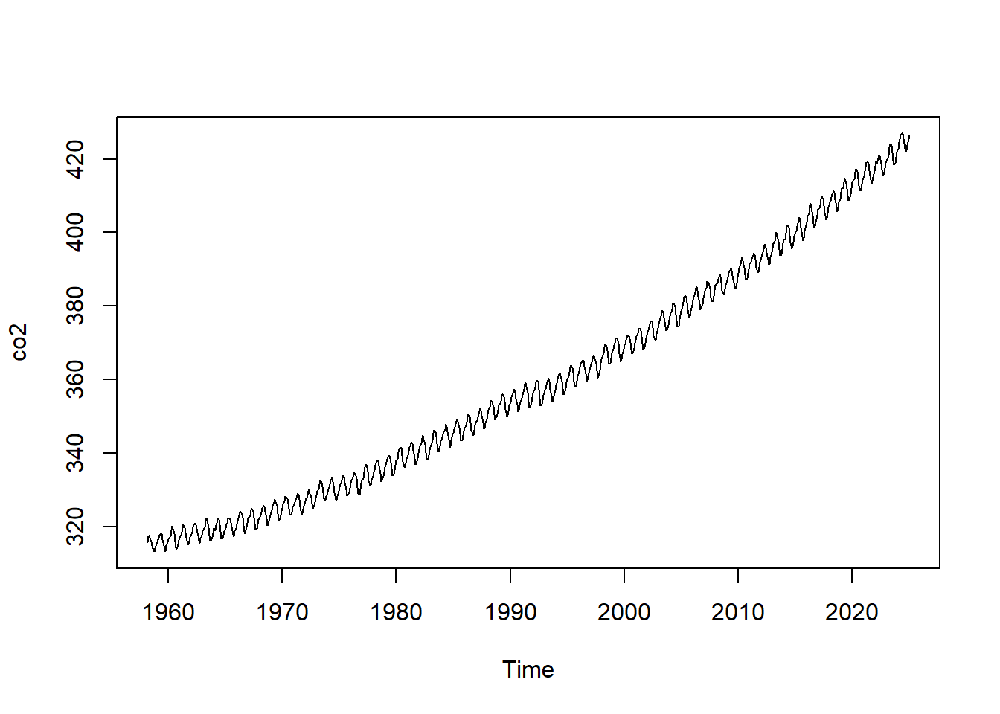
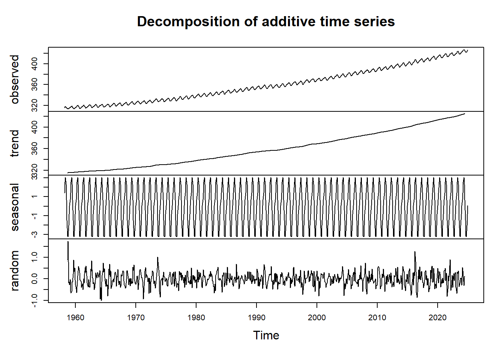
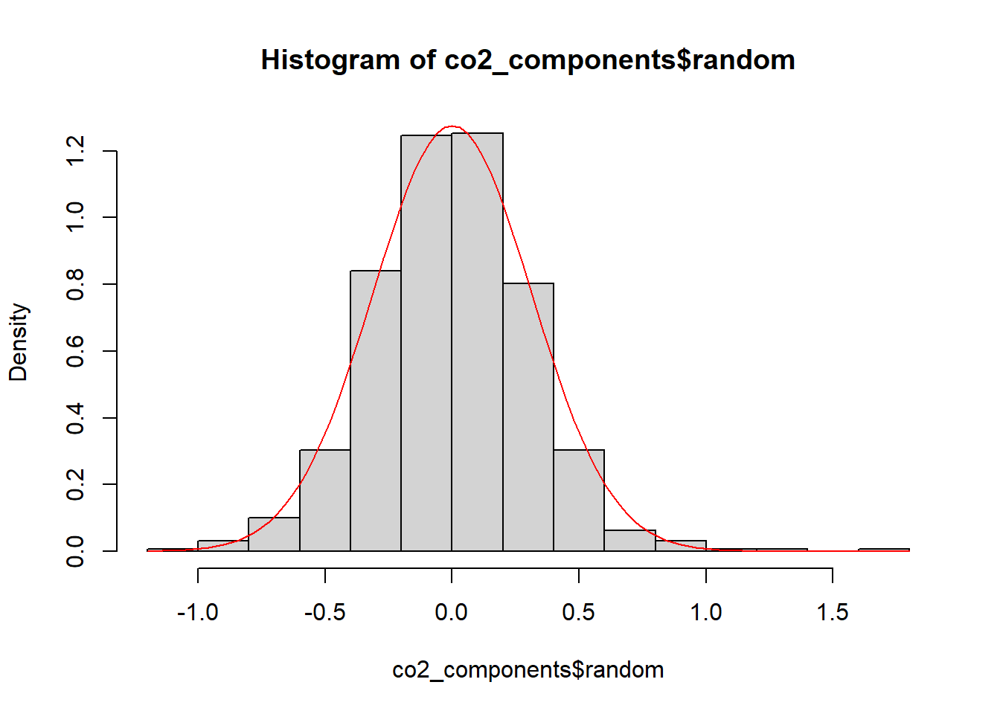
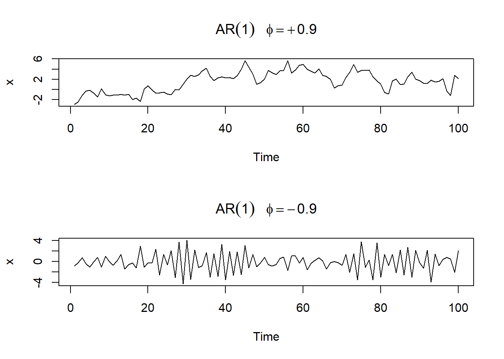
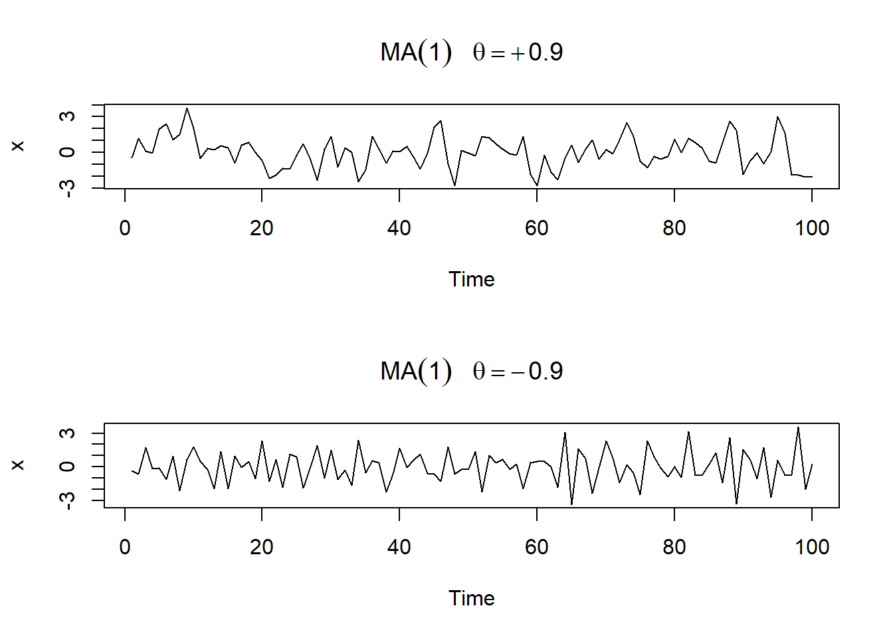
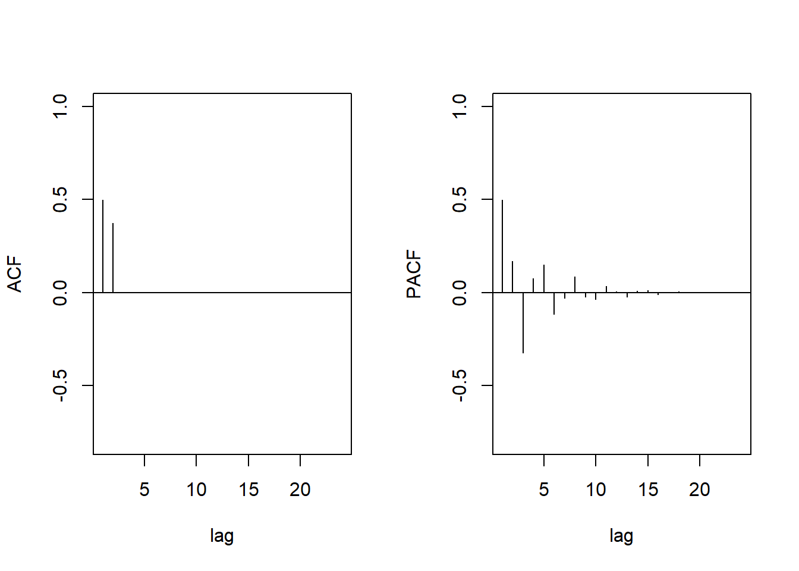
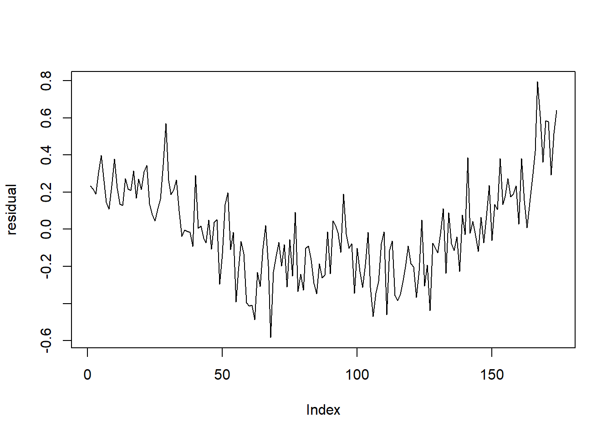
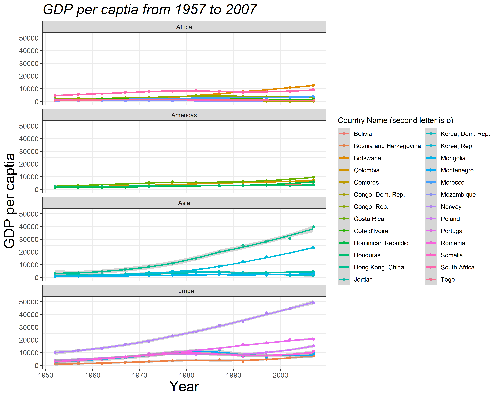

Section 18 Plotting with R (I):
ggplot2
Prerequisites
Load the libraries with R:
This section is modified from the excellent Data
visualisation and How to make
any plot in ggplot2?, both are freely available
online.
ggplot2 is the most elegant and aesthetically pleasing
graphics framework available in R. It implements the grammar of
graphics, a coherent system for describing and building graphs.
It can significantly improve your plots’ quality and make you much more
efficient in creating them. With that being said, the learning curve is
steep because the way you make plots with ggplot2 is very
different from base graphics making in R and in other languages. The
distinctive feature of the ggplot2 framework is the way you
make plots through adding layers. Here we will learn
the steps of making a plot with ggplot2. More about
ggplot2, check How to make
any plot in ggplot2?.
Steps of plotting with ggplot2
1. Passing the data set
First of all, you need to tell R what data set to use in plotting.
This is done by passing a data.frame object to the
ggplot() function. Here the data frame object should
contain all features needed to make the plot you want.
Unlike base graphics in R and other languages, ggplot()
does not take vectors as arguments.
In previous sections, you learn how to use the pipe operator
(%>%) to pass a data set (tibble object)
produced through data wrangling to
the ggplot() function. This is exactly what you need to do
in this step.
Let’s use the gapminder data set. Now suppose we want to
look at how GDP per capita (gdpPercap) changes from 1957 to
2007 for countries with names starting with the letter “C” in Asia or
Europe. (I make up this subjective example, but hopefully, you can feel
the power of the dplyr package!) We can then pass the
subset of gapminder data to ggplot to make a
scatter plot between gdpPercap and year.
# Make a simple scatter plot
gapminder %>%
dplyr::filter( continent=="Asia" | continent=="Europe" ) %>%
dplyr::filter( substr(country,1,1)=="C" ) %>%
ggplot( aes(x=year, y=gdpPercap) ) +
geom_point()
2. Mapping the aesthetics
The plot above, however, can not distinguish countries as all points
are plotted in the same manner. In fact, we would like to add
country as the third variable to the two dimensional
scatter plot. By doing so, we are mapping the scatter plot to an
aesthetic. An aesthetic is a visual property of the objects in
your plot. Aesthetics include things like the size,
shape, color, or even transparency
(alpha) of the points. You can display a point (like the
one below) in different ways by changing the values of its aesthetic
properties.
# Add an aesthetic - color
gapminder %>%
dplyr::filter( continent=="Asia" | continent=="Europe" ) %>%
dplyr::filter( substr(country,1,1)=="C" ) %>%
ggplot( aes(x=year, y=gdpPercap, color=country) ) +
geom_point()
To map an aesthetic to a variable, associate the name of the
aesthetic to the name of the variable inside aes().
ggplot2 will automatically assign a unique level of the
aesthetic (here a unique color) to each unique value of the variable, a
process known as scaling. ggplot2 will also add a
legend that explains which levels correspond to which
values.
In the above example, we mapped country to the
color aesthetic, but we could have mapped
country to the size aesthetic in the same way.
In this case, the exact size of each point would reveal its class
affiliation.
# Add an aesthetic - size
gapminder %>%
dplyr::filter( continent=="Asia" | continent=="Europe" ) %>%
dplyr::filter( substr(country,1,1)=="C" ) %>%
ggplot( aes(x=year, y=gdpPercap, size=country) ) +
geom_point()## Warning: Using size for a discrete variable is not advised.
We get a warning here, because mapping an unordered variable
(country) to an ordered aesthetic (size) is
not a good idea. We can ignore the warning for now.
Similarly, we could map country to the
shape or alpha aesthetic:
# Add an aesthetic - shape
gapminder %>%
dplyr::filter( continent=="Asia" | continent=="Europe" ) %>%
dplyr::filter( substr(country,1,1)=="C" ) %>%
ggplot( aes(x=year, y=gdpPercap, shape=country) ) +
geom_point()
# Add an aesthetic - transparency
gapminder %>%
dplyr::filter( continent=="Asia" | continent=="Europe" ) %>%
dplyr::filter( substr(country,1,1)=="C" ) %>%
ggplot( aes(x=year, y=gdpPercap, alpha=country) ) +
geom_point()## Warning: Using alpha for a discrete variable is not advised.
You can even combine more than one aesthetic:
# Add two aesthetics - color + shape
gapminder %>%
dplyr::filter( continent=="Asia" | continent=="Europe" ) %>%
dplyr::filter( substr(country,1,1)=="C" ) %>%
ggplot( aes(x=year, y=gdpPercap, color=country, shape=country) ) +
geom_point()
# Add two aesthetics - shape + size
gapminder %>%
dplyr::filter( continent=="Asia" | continent=="Europe" ) %>%
dplyr::filter( substr(country,1,1)=="C" ) %>%
ggplot( aes(x=year, y=gdpPercap, color=country, shape=continent, size=country) ) +
geom_point()## Warning: Using size for a discrete variable is not advised.
Once you map an aesthetic, ggplot2 takes care of the
rest. It selects a reasonable scale to use with the aesthetic, and it
constructs a legend that explains the mapping between levels and
values.
3. Adding more geometric objects
In the previous steps, we make a scatter plot between
gdpPercap and year. The plot uses a visual
object to represent the data. In ggplot2 syntax, we say the
plot uses a geometrical object or geom.
People often describe plots by the type of geom that the plot uses.
For example, bar charts use bar geoms, line charts use line geoms,
boxplots use boxplot geoms, and so on. ggplot2 provides
over 40 geoms, and extension packages provide even more (see here for a
sampling). The best way to get a comprehensive overview is ggplot2
cheatsheet. To learn more about any single geom, use ?,
for example ?geom_smooth.
In ggplot2, you can use “+” to add another geom to the
plot. In the plot below, we add a smoothed line to the scatter plots
from the individual country.
# Use two geoms - point + smooth line
gapminder %>%
dplyr::filter( continent=="Asia" | continent=="Europe" ) %>%
dplyr::filter( substr(country,1,1)=="C" ) %>%
ggplot( aes(x=year, y=gdpPercap, color=country) ) +
geom_point() +
geom_smooth()## `geom_smooth()` using method = 'loess' and formula = 'y ~ x'4. Changing the labels
Now that you have drawn the main parts of the plot. You might want to
add the plot’s main title and perhaps change the X and Y axis titles.
This can be accomplished using the labs layer, meant for
specifying the labels. However, manipulating the size, the color of the
labels is the job of the ‘Theme’.
# Change labels
gapminder %>%
dplyr::filter( continent=="Asia" | continent=="Europe" ) %>%
dplyr::filter( substr(country,1,1)=="C" ) %>%
ggplot( aes(x=year, y=gdpPercap, color=country) ) +
geom_point() +
geom_smooth() +
labs(title="GDP per captia from 1957 to 2007", x="Year", y="GDP per captia")## `geom_smooth()` using method = 'loess' and formula = 'y ~ x'
5. Adjusting the theme
Very often, we want to customize our plot to make it looks better.
For example we may need to increase the size of the labels and/or change
the legend title. Adjusting the size of labels can be done using the
theme() function by setting theplot.title,
axis.text.x, and axis.text.y option. They need
to be specified inside the element_text(). If you want to
remove any of them, set it to element_blank(), and it will
vanish entirely.
Adjusting the legend title is a bit tricky. If your legend is that of
a color attribute and it varies based on a factor, you need
to set the name using the
scale_color_discrete() function, where the color part
belongs to the color attribute and the discrete because the
legend is based on a factor variable.
# Change the theme
gapminder %>%
dplyr::filter( continent=="Asia" | continent=="Europe" ) %>%
dplyr::filter( substr(country,1,1)=="C" ) %>%
ggplot( aes(x=year, y=gdpPercap, color=country) ) +
geom_point() +
geom_smooth() +
labs(title="GDP per captia from 1957 to 2007", x="Year", y="GDP per captia") +
theme_bw() +
theme(plot.title=element_text(size=20, face="bold"),
axis.text.x=element_text(size=10),
axis.text.y=element_text(size=10),
axis.title.x=element_text(size=20),
axis.title.y=element_text(size=20)) +
scale_color_discrete(name="Country Name")## `geom_smooth()` using method = 'loess' and formula = 'y ~ x'6. Using the facets
For categorical variables, it is particularly useful to split your
plot into facets, subplots that each display one subset of the
data. To facet your plot by a single variable, use
facet_wrap(). The first argument of
facet_wrap() should be a formula, which you create with
~ followed by a variable name. The variable that you pass
to facet_wrap() should be discrete.
Let’s split our plot into two facets based on
continent:
# Using the facets
gapminder %>%
dplyr::filter( continent=="Asia" | continent=="Europe" ) %>%
dplyr::filter( substr(country,1,1)=="C" ) %>%
ggplot( aes(x=year, y=gdpPercap, color=country) ) +
geom_point() +
geom_smooth() +
labs(title="GDP per captia from 1957 to 2007", x="Year", y="GDP per captia") +
theme_bw() +
theme(plot.title=element_text(size=20, face="bold"),
axis.text.x=element_text(size=10),
axis.text.y=element_text(size=10),
axis.title.x=element_text(size=20),
axis.title.y=element_text(size=20)) +
scale_color_discrete(name="Country Name") +
facet_wrap( ~ continent)## `geom_smooth()` using method = 'loess' and formula = 'y ~ x'
One way to change the layout the facets is specifying
ncol and nrow options in the
facet_wrap() function:
# Using the facets - 2 rows (2x1)
gapminder %>%
dplyr::filter( continent=="Asia" | continent=="Europe" ) %>%
dplyr::filter( substr(country,1,1)=="C" ) %>%
ggplot( aes(x=year, y=gdpPercap, color=country) ) +
geom_point() +
geom_smooth() +
labs(title="GDP per captia from 1957 to 2007", x="Year", y="GDP per captia") +
theme_bw() +
theme(plot.title=element_text(size=20, face="bold"),
axis.text.x=element_text(size=10),
axis.text.y=element_text(size=10),
axis.title.x=element_text(size=20),
axis.title.y=element_text(size=20)) +
scale_color_discrete(name="Country Name") +
facet_wrap( ~ continent, nrow=2)## `geom_smooth()` using method = 'loess' and formula = 'y ~ x'
7. Saving the plot
Finally, you can save the above plot uisng the ggsave()
function. The default is to save the last plot that you displayed, using
the size of the current graphics device. It’s smart enough to guess the
type of graphics device from the extension. Let’s save the above figure
to a local path D://ese335 with a name
myplot.png:
# Save a ggplot figure
gapminder %>%
dplyr::filter( continent=="Asia" | continent=="Europe" ) %>%
dplyr::filter( substr(country,1,1)=="C" ) %>%
ggplot( aes(x=year, y=gdpPercap, color=country) ) +
geom_point() +
geom_smooth() +
labs(title="GDP per captia from 1957 to 2007", x="Year", y="GDP per captia") +
theme_bw() +
theme(plot.title=element_text(size=20, face="bold"),
axis.text.x=element_text(size=10),
axis.text.y=element_text(size=10),
axis.title.x=element_text(size=20),
axis.title.y=element_text(size=20)) +
scale_color_discrete(name="Country Name") +
facet_wrap( ~ continent, nrow=2)
ggsave("myplot.png") # save a stored ggplotYou can also change the plot size (width and
height) and resolution (dpi) by setting
corresponding options. Use ?ggsave() for more.
# Save a ggplot object
plot1 <- gapminder %>%
dplyr::filter( continent=="Asia" | continent=="Europe" ) %>%
dplyr::filter( substr(country,1,1)=="C" ) %>%
ggplot( aes(x=year, y=gdpPercap, color=country) ) +
geom_point() +
geom_smooth() +
labs(title="GDP per captia from 1957 to 2007", x="Year", y="GDP per captia") +
theme_bw() +
theme(plot.title=element_text(size=20, face="bold"),
axis.text.x=element_text(size=10),
axis.text.y=element_text(size=10),
axis.title.x=element_text(size=20),
axis.title.y=element_text(size=20)) +
scale_color_discrete(name="Country Name") +
facet_wrap( ~ continent, nrow=2)
# And later save it to a stored figure
ggsave("myplot2.png", plot=plot1, width=20,
height=10, units="cm", dpi=400)ggplot2’s grammar of graphics and beyond
We have covered some basics but critical steps of making plots with
ggplot2. There are many more features that we don’t have
time to go through in just one section. You can explore the full
functionality of ggplot2() by studying the further
reading listed at the end.
To summarize, ggplot2’s grammar of graphics goes
like:
# ggplot functions
ggplot(data = <DATA>) +
<GEOM_FUNCTION>(
mapping = aes(<MAPPINGS>),
stat = <STAT>,
position = <POSITION>
) +
<COORDINATE_FUNCTION> +
<FACET_FUNCTION>
# Save a ggplot figure
ggsave() The template takes seven parameters, the bracketed words
that appear in the template. We have no time to cover STAT,
POSITION, and COORDINATE_FUNCTION, which you
can learn by yourself following the further
reading. In practice, you rarely need to supply all seven parameters
to make a plot because ggplot2 will provide useful defaults
for everything except the data, the mappings, and the geom function.
The seven parameters in the template compose the grammar of graphics, a formal system for building plots. The grammar of graphics is based on the insight that you can uniquely describe any plot as a combination of a data set, a geom, a set of mappings, a stat, a position adjustment, a coordinate system, and a faceting scheme.
With this, you can make any type of plot with
ggplot2()!
R Graph Gallery
A good way to learn ggplot2 is to browse plots (and
scripts!) in the R Graph Gallery, such as:
- The R Graph Gallery
- Top
50
ggplot2Visualizations ggplot2extensions- Plotly R Open Source Graphing Library
Find the plots you want to mimic, edit and customize the scripts based on your need.
In-class exercises
Exercise #1
Can you reproduce the following figure (myfirstplot.png,
width 25 cm, height 20 cm, and dpi 400) with ggplot2?
